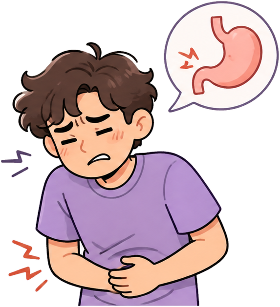
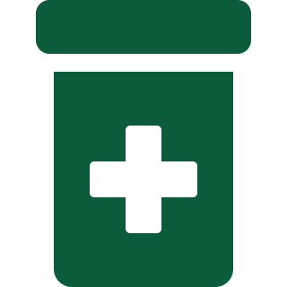
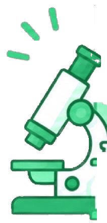
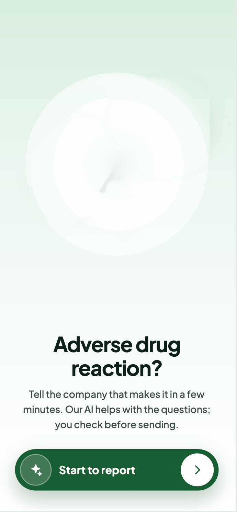
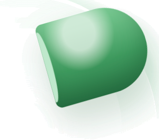

CHALLENGE 3
Sovereign Health
Presented by
Aditya Purwar · Vamshidhar Reddy Enugala · Saloni Gupta
It starts with one patient

Stomach Ache
Took Medication
(for relief)
Unexpected Reaction:
Acne Breakouts
2
The Reporter's dilemma
How Do I
Report It?
Who do I report it to?
Who is the manufacturer?

Which pharmaceutical company is responsible?
Where can I find their contact details?
How do I communicate this adverse reaction?
3
86%
14%
do not report
report
Source: García-Abeijon et al. 2023, Drug Safety
4
86%
14%
do not report
report
100 to 100,000 Report
Source: García-Abeijon et al. 2023, Drug Safety
5
Current pharmacovigilance process
SOURCES
REGULATORY OUTPUTS
Web Forms
Phone / Helpline
Emails
Research Papers (PubMed)
Twitter / X
Report Relevance Assessment
Structured Classification
(MedDRA Coding)
Signal Detection & Analysis
Validate, de-duplicate and identify relevant PV reports (ICSR triage)
Medicine Classification (MedDRA)
Disease / Adverse Event Classification (MedDRA)
Detect safety signals, assess trends and evaluate benefit–risk

PSUR
Periodic Safety Update Report
PADER
Periodic Adverse Drug Experience Report

DSUR
Development Safety Update Report

RMP
Risk Management Plan

Other
Regulatory Reports
6
Why it matters
Reports submitted to regulatory bodies

Documentation improves medicine research
7
Dashboard Overview
Triage
Case Workbench
MedDRA Coding
Signal Detection
Signal Detection
Audit
Thank You




How it works
AI proposes. Fixed rules decide. A human approves.
17